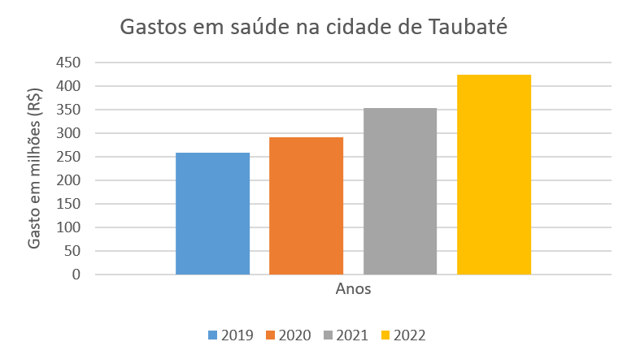

{% extends 'base.html' %}
{% block title %}
Gráficos - Taubaté
{% endblock %}
{% block body %}
Taubaté - Covid longa

-
2019
- Educacao - Fundeb - Magisterio 1 - Secretaria De Educacao Folha De Pagamento
- Ensino Fundamental 1 - Secretaria De Educacao Folha De Pagamento
- Atencao Basica 2 - Fundo Municipal De Saude Folha De Pagamento
- Geral 1 - Secretaria De Servicos Publicos
- Progr.Melhoria Mobilidade Urbana E Sociambiental
-
2020
- Educacao - Fundeb - Magisterio 1 - Secretaria De Educacao Folha De Pagamento
- Atencao Basica 2 - Fundo Municipal De Saude Folha De Pagamento
- Geral 1 - Secretaria De Servicos Publicos
- Ensino Fundamental 1 - Secretaria De Educacao Folha De Pagamento
- Progr.Melhoria Mobilidade Urbana E Sociambiental
-
2021
- Secretaria De Educacao Educacao-Fundeb-Mag/Prof - Educacao
- Atencao Basica 2 - Fundo Municipal De Saude
- Geral 1 - Secretaria De Servicos Publicos
- Atencao Media Alta Comp Ambulatorial Hospitalar 2 - Fundo Municipal De Saude
- Ensino Fundamental 1 - Secretaria De Educacao Folha De Pagamento
-
2022
- Secretaria De Educacao Educacao-Fundeb-Mag/Prof - Educacao
- Secretaria De Servicos Publicos Ecotaubate Ambiental S/A
- Fundo Municipal De Saude Associacao Paul. Para Desenv. Medicina - Spdm
- Fundo Municipal De Saude Instituto Esperanca
- Atencao Basica 2 - Fundo Municipal De Saude
{% endblock %}
{% block footer %}
{% endblock %}